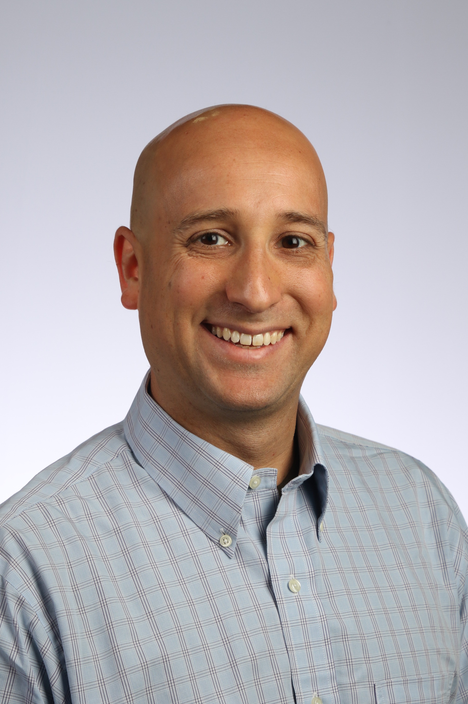

Jonah Kanner
Senior Scientist
LIGO Laboratory, Caltech
California Institute of Technology Mail Stop #100-36 Pasadena, CA 91125 USA
626-395-8437
email: jonah.kanner at ligo.org
office: 352a W. Bridge
LIGO Laboratory, Caltech
California Institute of Technology Mail Stop #100-36 Pasadena, CA 91125 USA
626-395-8437
email: jonah.kanner at ligo.org
office: 352a W. Bridge

Research
I work within the LIGO Scientific Collaboration to analyze LIGO data, as well as data from radio, optical, and X-ray and instruments, to find explosive astrophysical events. My main interests are in the new field of gravitational-wave astronomy, and what gravitational-wave observations can teach us about the universe we call home. All of the work I do is collaborative, and I am very lucky to work with so many excellent colleagues and students. With colleagues, I have helped to:- co-chair the LIGO/Virgo Burst Working Group.
- edit the Burst Group companion paper to the first detection of gravitational waves from merging black holes.
- develop the LIGO Open Science Center.
- improve the ability to distinguish real gravitational wave signals from noise events.
- characterize rare X-ray transients in the nearby universe with data from all-sky surveys.
- lead the first program to follow-up LIGO/Virgo triggers with optical observatories.
Selected Papers

B. Abbott et al. (LSC and Virgo Collaboration) Observing gravitational-wave transient GW150914 with minimal assumptions Physical Review D 93, 122004 (2016) arXiv:1602.03843

J. Kanner, T. Littenberg, N. Cornish, M. Millhouse, E. Xhakaj, F. Salemi, M. Drago, G. Vedovato, and S. Klimenko Leveraging waveform complexity for confident detection of gravitational waves Physical Review D, 93, 022002 (2016)

J. Aasi et al. (LSC and Virgo Collaboration) First Searches for Optical Counterparts to Gravitational-wave Candidate Events The Astrophysical Journal Supplement 211, 7 (2014) J. Kanner corresponding author

J. Kanner, J. Baker, L. Blackburn, J. Camp, K. Mooley, R. Mushotzky, A. Ptak, X-ray Transients in the Advanced LIGO/Virgo Horizon The Astrophysical Journal 774, 63 (2013)
More Information:
- My Ph.D. Thesis on seeking optical counterparts to GW signals
- Short author list papers
- All publications
- Caltech LIGO Lab Astrophysics Group
Teaching and Mentoring

I like working with students, and I have enjoyed teaching and mentoring in a variety of contexts. These include full-time high school teacher, SURF research mentor, university TA, physics and math tutor, and many outreach events, including high schools, elementary schools, teacher training, and even physics demonstrations at Six Flags (seen in the photo).
Members of LIGO Lab can borrow the Caltech LIGO Lab EPO Kit for outreach events.
LIGO Lab SURF Program
Video by 2018 SURF students
Press
Following the first direct detection of gravitational waves, I was quoted in a few articles:- LA Times 1
- LA Times 2
- Nautilus Magazine 1
- Nautilus Magazine 2
- Charleston, WV Gazette-Mail
- Spacepod Part 1
- Spacepod Part 2
- Spacepod Part 3
- Symmetry
Articles

CaJAGWR Seminars
The Caltech and JPL community are invited to CaJAGWR seminars, spanning a range of topics related to gravitational waves.